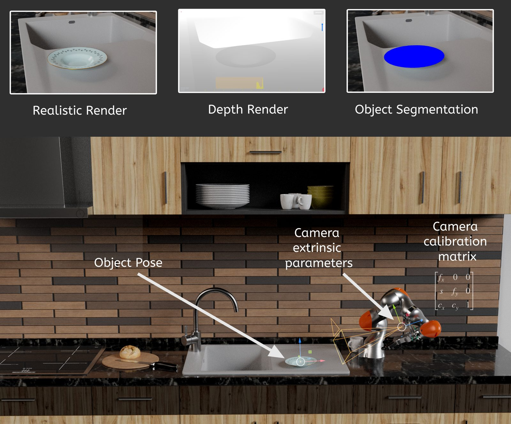
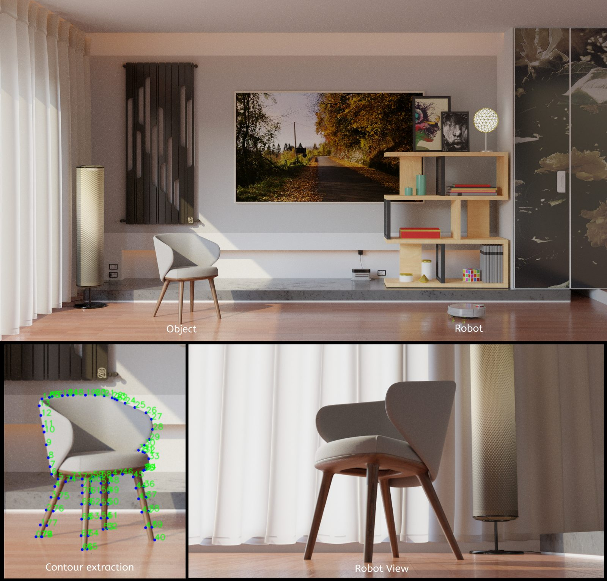
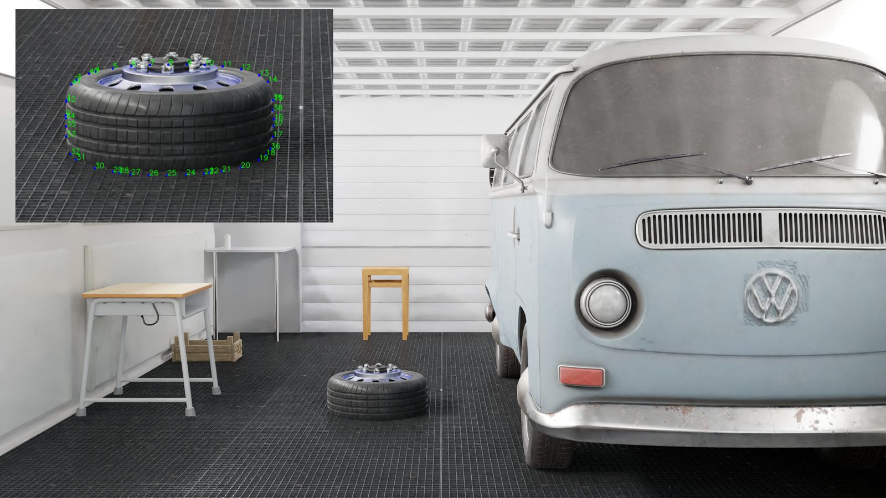

PoseGen
A synthetic dataset generator for training 6D object-pose networks for robot grasping. It renders photorealistic images with exact labels that would be impossible to annotate by hand.
What every sample contains
01Photoreal render
Blender Cycles path tracing, so networks trained on it transfer better to real images.
02Depth map
From the compositor's Z pass, with configurable FOV, resolution and depth threshold.
03Segmentation
Per-pixel object mask, rendered from the same camera.
046D object pose
The object's 3×4 world matrix (rotation + translation) per sample.
05Camera parameters
Extrinsics as translation + quaternion, and the intrinsic matrix K computed from lens and sensor.
06Object contours
Projected silhouette polygon, from a union of the evaluated mesh's projected faces.
07Pose randomisation
Randomised object placement per sample, to cover the pose space.
08One-command pipeline
DatasetGenerator.py runs render → contours → depth → export for N samples.
09Research use
Built at IITL for robot manipulation research, inspired by the YCB benchmark.
A batch pipeline inside Blender
What I chose, and what I didn't
| Decision | Rejected | Why |
|---|---|---|
| Synthetic data | Hand-labelled photos | 6D pose can't be labelled accurately by hand; synthetic labels are exact and free |
| Cycles path tracing | Fast rasterised renders | Photorealism narrows the sim-to-real gap |
| Scripted Blender (bpy) | A custom renderer | Production-quality lighting, materials and assets for free |
| Contours from projected mesh faces | Tracing the mask image | Vector-accurate silhouettes, independent of image resolution |
| K computed from lens + sensor | Hard-coded intrinsics | Stays correct when resolution, focal length or sensor fit changes |
From a 3D pose to a labelled pixel
Contours from geometry, not pixels

What one sample stores
From research tool to data pipeline
- Portability: remove the hard-coded Windows paths and move settings to a config file.
- Domain randomisation: randomise lighting, backgrounds and textures too, not just pose.
- Scale: run headless in parallel containers, one worker per sample batch.
- Standards: export BOP / COCO annotations.
- Validation: fine-tune on a small real set to measure the sim-to-real gap.
The shape of this pipeline (generate, process, label, export, in batches) is the same shape as an imagery ingestion pipeline feeding AI downstream services.
